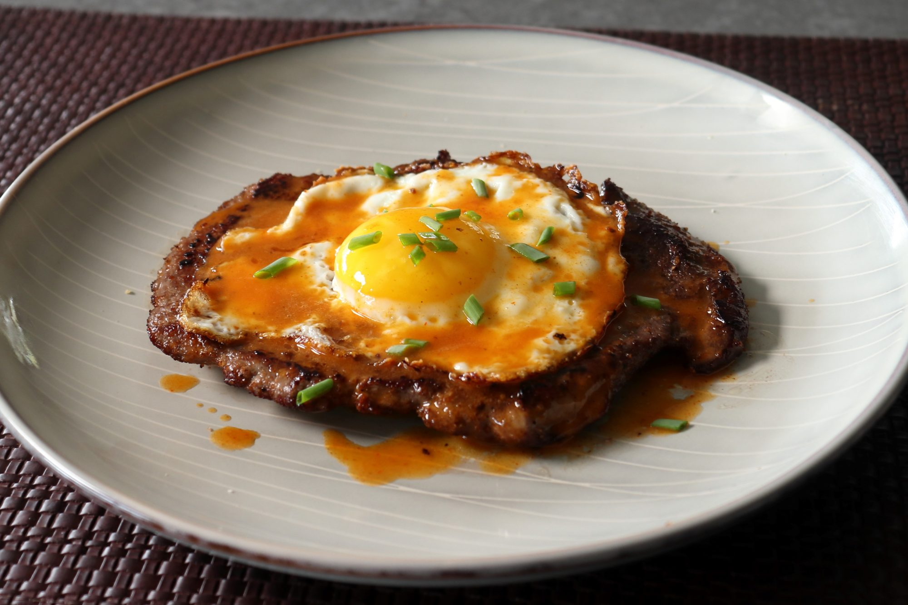

Grilled Chicken and Potato Foil Packs

Description
Start your day with this breakfast of champions. A juicy, tender sirloin steak topped with a perfectly fried egg and a red hot butter sauce is ready to enjoy in just minutes!
Ingredients
- 2 tablespoons clarified butter, melted
- 1 large egg
- 1 teaspoon clarified butter, melted
- Place steak between two pieces of plastic wrap and pound to a ¼-inch thickness. Season one side generously with salt and pepper, then sprinkle ½ of the bread crumbs over top. Place the plastic wrap back over the steak and pound a few times with the meat mallet. Repeat to season the other side with salt, pepper, and remaining bread crumbs.
- Set a pan over high heat. Add 2 tablespoons melted clarified butter and wait until it starts to smoke. Quickly and carefully add steak to the pan and cook for 1 minute. Flip steak and reduce heat to medium-high; cook until you see a little bit of pink juice pool on top of the steak, about 1 more minute. Flip again, turn off the heat, and transfer steak to a warm plate.